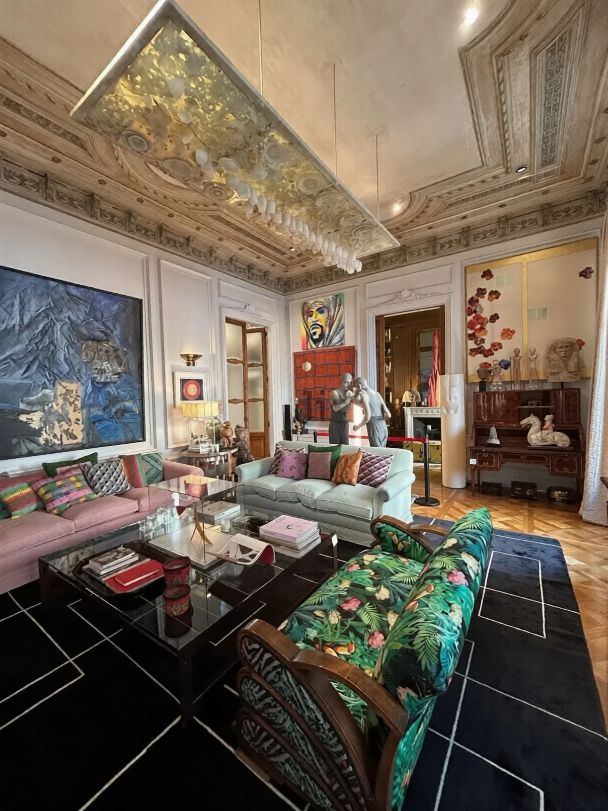

В бюджете · Eixample · бассейн и 4 парковки
«The Collector's Residence» — резиденция в модернистском доме
Calle de la Diputació, Eixample Derecho
6 500 000 €
14 254 €/м² по построенной площади · объявление обновлено сегодня
- Площадь построено
- 456 м²
- Площадь полезная
- 440 м²
- В описании продавца
- 400 м²
- Терраса
- 150 м², частная
- Спальни
- 5
- Ванные
- 4
- Этаж
- 1-й
- Бассейн
- да
- Парковка
- 4 частных места
- Здание
- историческое, модернистское
- Лифт
- есть
Описание объекта
Резиденция в сердце Eixample Derecho, в величественном модернистском здании.
Квартира площадью 400 м² (по документам 456 м² построено, 440 полезных) оформлена как живая галерея: её курировал коллекционер современного искусства с международным именем. Каждое пространство задумано не просто для жизни, а для восприятия.
Естественный свет свободно проходит через большие объёмы, подчёркивая и архитектурные детали, и тщательно отобранные произведения искусства.
Резиденция выходит на редкую для центра города частную террасу площадью 150 м².
Объект сочетает масштаб, элегантность и функциональность, включая четыре частных парковочных места — почти недостижимую роскошь для этой локации.
Обновление: объявление обновлено в день сбора данных
На что обратить внимание
- Числится как piso, 1-й этаж — это не пентхаус и не дуплекс. По типу объект отличается от исходного запроса.
- Площадь в описании продавца (400 м²) и в карточке (456/440 м²) расходятся — сверить по документам.
- Проверить, не тот же ли это объект, что второй лот на Diputació за ту же цену: там 542/459 м², терраса 189 м², 6 ванных и 3 парковки. Цифры не совпадают, но улица и цена совпадают.